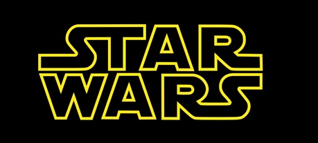
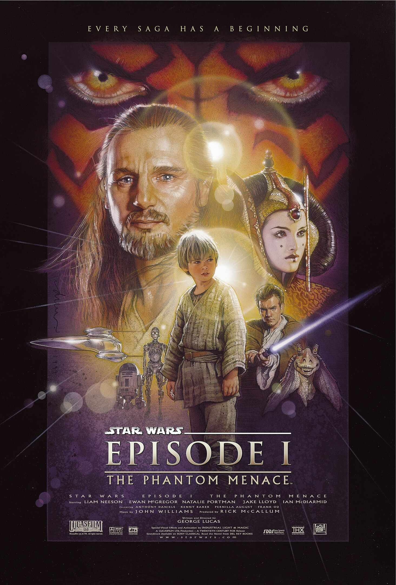
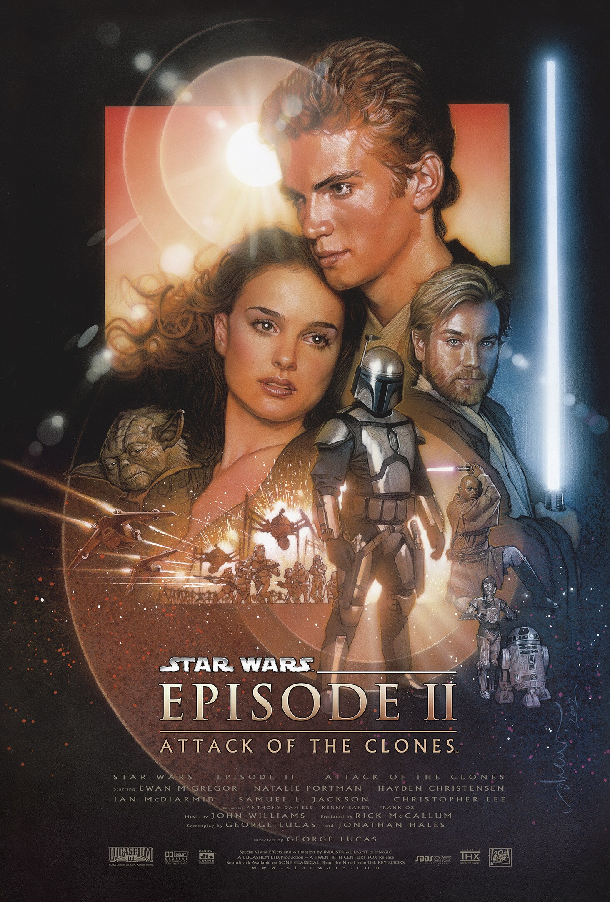
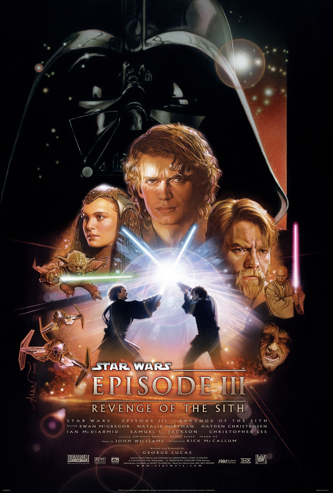
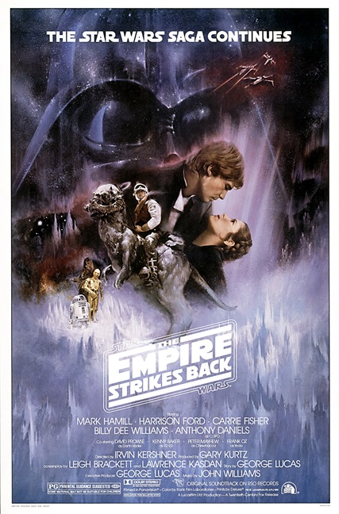
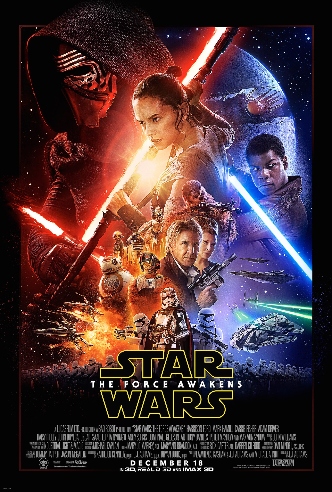
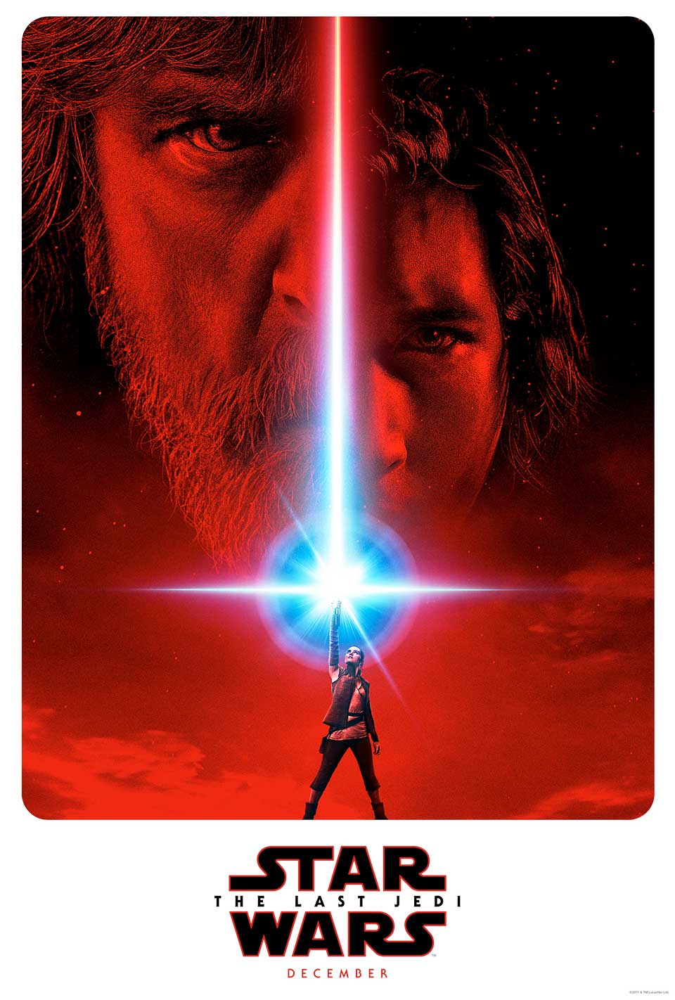
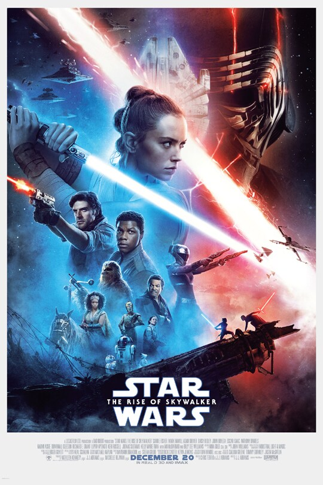

Star War - Trilogía Precuelas

Episodio I - La Amenaza Fantasma
Sé testigo de los primeros pasos trascendentales en el viaje de Anakin Skywalker . Varados en el planeta desértico Tatooine tras rescatar a la joven Reina Amidala de la inminente invasión de Naboo , el aprendiz Jedi Obi-Wan Kenobi y su Maestro Jedi Qui-Gon Jinn descubren a Anakin, de nueve años, quien posee una conexión inusual con la Fuerza. Anakin gana una emocionante carrera de vainas y, con ella, su libertad, dejando su hogar para ser entrenado como Jedi. Los héroes regresan a Naboo, donde Anakin y la Reina se enfrentan a enormes fuerzas invasoras mientras los dos Jedi luchan contra un enemigo letal llamado Darth Maul . Solo entonces comprenden que la invasión es apenas el primer paso de un siniestro plan de las fuerzas oscuras resurgentes conocidas como los Sith.

Episodio II - El Ataque de los Clones
Diez años después de la invasión de Naboo , la galaxia se encuentra al borde de una guerra civil. Bajo el liderazgo de un Jedi renegado llamado Conde Dooku , miles de sistemas solares amenazan con separarse de la República Galáctica . Cuando se produce un intento de asesinato contra la Senadora Padmé Amidala , la antigua Reina de Naboo, el joven aprendiz Jedi Anakin Skywalker, de veinte años, es asignado para protegerla. En el transcurso de su misión, Anakin descubre su amor por Padmé, así como su propio lado oscuro. Pronto, Anakin, Padmé y Obi-Wan Kenobi se ven envueltos en el corazón del movimiento separatista y el inicio de las Guerras Clon.

Episodio III - La Venganza de los Sith
Años después del inicio de las Guerras Clon, los nobles Caballeros Jedi lideran un enorme ejército de clones en una batalla galáctica contra los Separatistas. Cuando los siniestros Sith revelan un plan milenario para dominar la galaxia, la República se derrumba y de sus cenizas surge el malvado Imperio Galáctico . El héroe Jedi Anakin Skywalker es seducido por el lado oscuro de la Fuerza para convertirse en el nuevo aprendiz del Emperador : Darth Vader . Los Jedi son diezmados, y Obi-Wan Kenobi y el Maestro Jedi Yoda se ven obligados a esconderse.
Star War - Trilogía Original

Episodio IV - Una nueva esperanza
La trama describe la historia de un grupo de guerrilleros —conocidos como la Alianza Rebelde— cuyo objetivo es destruir la estación espacial Estrella de la Muerte, creada por el opresor Imperio Galáctico. Desde una perspectiva general, la historia se enfoca en un joven granjero llamado Luke Skywalker, quien, de forma repentina, se convertirá en un héroe conforme acompaña al Maestro Jedi Obi-Wan Kenobi en una misión que lo llevará a unirse a la Alianza Rebelde para ayudarles a destruir la estación espacial del Imperio.

Episodio V - El Imperio contraataca
La ficción de la película se sitúa tres años después de la destrucción de la estación espacial de combate conocida como la Estrella de la Muerte, destrucción acaecida al final del episodio anterior, Una Nueva Esperanza, estrenada en el año 1977. En El Imperio contraataca Luke Skywalker, Han Solo, Leia Organa y el resto de la Alianza Rebelde son perseguidos por Darth Vader y las fuerzas de élite del Imperio Galáctico. En este episodio se desarrolla la historia de amor entre Han y Leia, mientras que Luke aprende más sobre los caminos de la Fuerza de la mano del maestro Yoda. Con Han y Leia capturados por el Imperio, Luke luchará contra Darth Vader en una confrontación sin igual, pero Vader esconde una terrible revelación.

Episodio VI - El retorno del Jedi
"Hace mucho tiempo en una galaxia muy, muy lejana [...] Luke Skywalker ha regresado a Tatooine, su planeta de origen, para intentar rescatar a su amigo Han Solo de las garras del malvado Jabba, el Hutt. Pero Luke ignora que el IMPERIO GALÁCTICO ha comenzado en secreto la construcción de una nueva estación espacial armada, más poderosa que la temida Estrella de la Muerte. Una vez terminada, este arma suprema significará la aniquilación del pequeño grupo de rebeldes que lucha para restaurar la libertad en la galaxia…"
Trilogía de Secuelas

Episodio VII - El despertar de la Fuerza
La trama describe la historia de un grupo de guerrilleros —conocidos como la Alianza Rebelde— cuyo objetivo es destruir la estación espacial Estrella de la Muerte, creada por el opresor Imperio Galáctico. Desde una perspectiva general, la historia se enfoca en un joven granjero llamado Luke Skywalker, quien, de forma repentina, se convertirá en un héroe conforme acompaña al Maestro Jedi Obi-Wan Kenobi en una misión que lo llevará a unirse a la Alianza Rebelde para ayudarles a destruir la estación espacial del Imperio.

Episodio VIII - Los Últimos Jedi
"Hace mucho tiempo en una galaxia muy, muy lejana [...] La PRIMERA ORDEN impera. Luego de diezmar a la pacífica República, el Líder Supremo Snoke ahora envía a sus despiadadas legiones a asumir el control militar de la galaxia. [...] Solo la general Leia Organa y su grupo de combatientes de la RESISTENCIA se oponen a la creciente tiranía, convencidos de que el Maestro Jedi Luke Skywalker regresará y restaurará la chispa de esperanza en la lucha. [...] Pero la Resistencia ha sido expuesta. Mientras la Primera Orden se dirige hacia la base rebelde, los valientes héroes organizan un desesperado escape..."

Episodio IX - El ascenso de Skywalker
"Hace mucho tiempo en una galaxia muy, muy lejana [...] ¡Los muertos hablan! La galaxia ha escuchado una emisión misteriosa, una amenaza de VENGANZA en la siniestra voz del difunto EMPERADOR PALPATINE. [...] LA GENERAL LEIA ORGANA envía agentes secretos para reunir inteligencia, mientras REY, la última esperanza de los Jedi, entrena para la batalla contra la diabólica PRIMERA ORDEN.[...] Mientras tanto, el Líder Supremo KYLO REN se enfurece en busca del Emperador fantasma, decidido a destruir cualquier amenaza a su poder..."
Copyrith (C) - Derechos Reservados
site:www.starwar.com